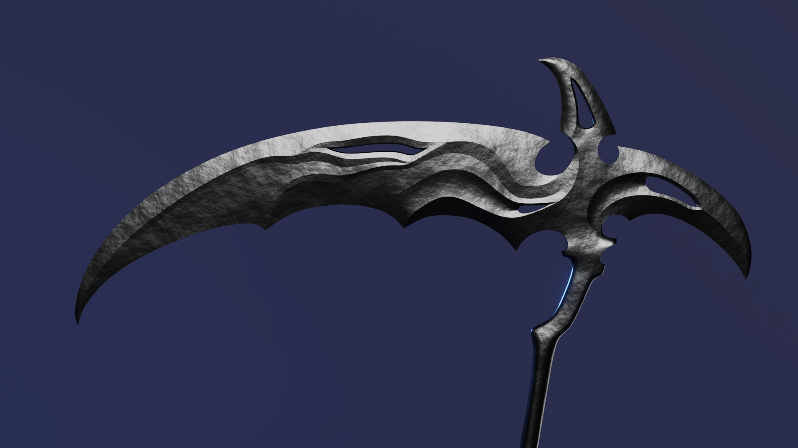

Coltivare's Products
Purchasing walkthrough:
1. Consider all the crops and needs you have for your farm. Not sure what product you might need for your crops in the upcoming months? Check out the farmer's almanac for all the updated seasonal and astronomical phenomena that can guide you through crop management and necessary tools for your farm.
2. Browse through this product page and make note of everything that will fulfill your needs. If you don’t see any items that will fit your specific wants, don’t worry. You can request custom orders to adjust any product when you set up an order.
3. Reach out to our salesperson and they will work with you to set up an order that’s just the right fit! Based on the specifications of your order, delivery time may vary. If you need any further help with any new products, please see the Company Services page.
Products
Scythes
This curved blade made of obsidian is the best in the business for cutting grass, harvesting crops and general mowing.

Sawblade
Perfect for woodworking and metalworking, this enchanted metal device is strong enough to cut through your hardest materials. Even useful in cutting down those pesky beanstocks before your farm gets a nasty giant infestation
Growth Elixir
As mentioned on our Company Services page, our secret formula elixir will give your most stubborn plants a growthspurt with just a single drop!
Crowbar
Useful for prying out stones in a cropfield or to breakthough hard soil for seed planting
Axehead
This silver axehead is wonderful for woodchopping, clearing bushes and weeds, and fending off local werewolves.

Farming Forks
Not just useful for scaring off your local monsters, but top of the line for tilling any type of soil.
Adjustable Wrench
This barn staple is a trustworthy tool to have around for every use from simple fense fixing to adjustments on hovercrafts. to
Hoe
Simple yet sterdy, our signature hoe is the trusty device used for generations for soil manipulation and aeration.
Hammer
This gravity adjusting hammer is great to keep farmers from overexerting themselves with it's automatic gravity-multiplier that increases strength tenfold on the downswing.
Hovertractor
Our newest and top of the line hovertractor offers both the best milage and fastest field coverage time without needing a single tire!
From Us to You
We at Coltivare are always striving for innovation, excellence and to provide the best magical equiptment possible for the tiniest of gardens to the largest of farms. If you have any concerns about a product, suggestions or simply want to reach out about please don't hesistate to contact us.
Having trouble deciding what to potions to make with this seasons crops? Please enjoy this pamphlet of our favorite spells to whip up in kitchen. Our staff picks are perfect for the next full moon or a simple weekend treat.